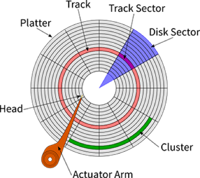
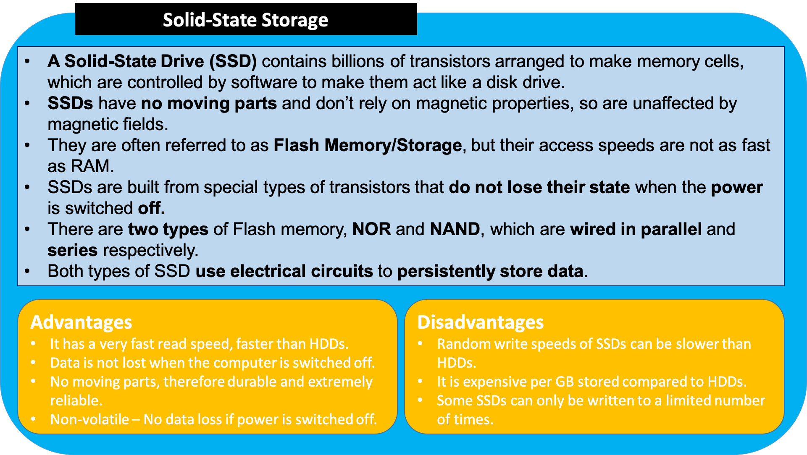

3.4.4 Computer Systems - Systems Architecture
Table of Contents
1 Computer Architecture
Learn It: Von Neumann Architecture
- Computer architecture refers to the functionality, organisation, structure and implementation of a computer system.
- The processor known as the
Central Processing Unit(CPU) is the brains of the computer. It is here where data processing takes place. - The
first computer systemsdeveloped werenot abletostoreprograms and programdatawasinputtedusingswitches. - In 1945
John Von Neumannwas credited with designing the fundamental concept behind all modern computer systems. Von Neumann Architecturedescribes a system where a single control unit manages theFetch-Execute cycle, and both instructions and data are stored in the same memory unit.- His design included a processing unit, a program counter, memory to store data and instructions and external storage and input and output mechanisms.
- In the Von Neumann architecture:
- The program is stored in the main memory and instructions are fetched and executed sequentially.
- There is a single memory and bus system for accessing both data and programs.
Von Neumann Architecture Diagram

- The diagram above shows the components of the central processing unit (CPU) and how they communicate with each other and with the other computer system components.
- Take a close look at the components, their functions and the way in which program instructions are executed will be described later in this topic.
2 The Central Processing Unit (CPU)
Learn It: What is the CPU?
- The CPU lies at the heart of any Computer System, and is analogous to the brain in a human. There are many processors in a modern computer. CPUs can contain one or more processing units known as cores.
- It is common for computers to have
two (dual),four (quad)or even more cores. CPUs withmultiple coreshavemore powerto runmultiple programsat thesame time. - A CPU is an integrated circuit that is responsible for
performing arithmetic,logicalandI/O operations. - CPUs perform these operations as instructed by a computer program.
- A CPU is made up of three components:
- An Arithmetic & Logic Unit (ALU).
- A Control Unit (CU).
- Registers (Cache).
CPU - The CPU (Central Processing Unit) is responsible for processing and executing program instructions, performing calculations and comparisons, as well as coordinating the behaviour of other hardware. The CPU comprises of several different components as shown in the image below.
Learn It: Functions of the CPU
- The table below details how each part of the CPU functions:
3 Factors Affecting the Performance of the CPU
Learn It: CPU Performance
- Many factors can have an affect on the
speedandperformanceof acomputer system, but usually thebiggest factorsare to do with thehardware. - A CPU with a
higher rateof performance can execute instructions morequicklythan a CPU with a lower rate. - Your choice of CPU, RAM and GPU can all have
big effectsonperformance.
- We will look at the following factors that can have an affect on a CPU's performance:
- Clock Speed.
- Number of Cores.
- Type and Size of Cache.
Research It
- Watch this exciting and interesting video explaining the different types of CPU cache.
Document It
- Make notes on the information provided in the video.
Research It
- Explain how clock speed and cache memory size can affect the performance of a computer?
- Which type of memory is the most expensive?
4 The CPU and Fetch-Decode-Execute Cycle
Learn It: Understanding the Fetch-Execute Cycle?
- For a program to be run (executed) on a computer, it must be
loadedinto thecomputer’s main memory. - The
processorthenlocatesandaccessesthe program, which it then runs each instruction in turn. - When the program is loaded, the processor is given a start address of where the program is
storedin themain memoryin order to access it. - To run the program, the processor
fetchesan instruction,decodes itand thenexecutes it. - The program executes
one instruction at a timeand this is known as theFetch-Decode-Execute cycle.
- The Fetch-Decode-Execute cycle works in
4 steps:
5 Graphics Processing Unit (GPU)
In many modern computer systems, the task of rendering graphics is handled by the Graphics Card, which has it's own processor called a GPU.
Learn It: What are GPUs?
- GPUs are very
specialised processors, designed toprocessandrendergraphical output to the display screen. - A Graphics Card will contain, not only a
GPU, but also its owndedicated RAM, that can hold a complete screen image. - In many machines, the Graphics card is a separate device that is plugged into the Motherboard, but in laptops and mobile devices, it is often integrated with the Motherboard and so can't be upgraded.
Research It
Watch the following video on what a GPU does:
Document It
- Ensure your notes contain basic information about Graphics Cards and what the roll of the GPU is in Computer systems.
Research It
- GPUs are now often used in Altcoin mining, such as Bitcoin.
- Do some research to find out about how most crypto-currencies are mined, and why GPUs are more appropriate to this task than CPUs.
6 Memory
Learn It: What is Memory?
Memory refers to the part of a computer system that stores data for use by the central processing unit (CPU). The data includes program files and data files used by programs. The main memory components are situated on computer chips, known as semi-conductors. A semi-conductor is a material that can conduct electricity under certain conditions, but not in others, making it useful for controlling electrical current.

- There are different types of memory that a computer system uses, they can be classified as
volatile,Non-volatileandVirtual Memory. Details of each are shown below:
Learn It: Random Access Memory (RAM)
Random Access Memory (RAM)
- RAM is used to hold programs currently being executed, and the data the programs are using.
- When a
programis to beexecuted, it has to beloadedfrom thehard diskinto themain memory, so that the processor can access the instructions. - Any data needed for that program to run is also loaded into main memory. The processor cannot access secondary storage directly.
- The
main purpose of RAMis to act as atemporary storagefor programs and data, while the program is being executed.
- There are two types of RAM:
- Static RAM (SRAM): Can hold data without being refreshed for as long as there is a power supply. More expensive than DRAM.
- Dynamic RAM (DRAM): Needs to be refreshed by frequently reading and rewriting the contents because its stored charge does not last very long. DRAM is more widely used because it is cheaper and takes up less space than SRAM.
 Benefits of having more RAM
Benefits of having more RAM
- Having more RAM can mean a
FasterorSmootherSystem for the following reasons:- Computers with
less RAMmayrun slowlydue to having to make use ofVirtual Memory. - Computers with
more RAMcan run more applications or morememory-intensiveapplications making the systemrun faster overall. Upgrading RAMis relatively cheap and easy to do, replacing RAM with a higher capacity or higher speed, will improve the system performance.
- Computers with
Learn It: Read Only Memory (ROM)
Read Only Memory (ROM)
- ROM is a type of
non-volatile memorythatstoresessential data such as acomputer's configuration settings. - Essential data is pre-installed onto ROM chips when a computer
system is made. This type of memory is necessary to enable a
computer to
optain instructionsandinformationabout thehardwarefrom the moment it is switched on. - Once a file has been stored on a ROM, it can be read but
cannotbechangedby the user. - ROM can be accessed even if your computer has been switched off for months.
RAM Vs ROM
| RAM | ROM |
|---|---|
| Volatile - Data is lost when power is turned off (Temporary Memory) | Non-volatile - Data is not lost when power is turned off (Permanent Memory) |
| Stores user data/programs/part operating system currently in use | Used to store BIOS/Bootstrap loader which is required at start-up |
| Memory can be written to or read from | Memory can only be read from, but not written to |
Research It
- Find out some of the other tasks that the BIOS enables in a computer system.
7 Secondary Storage
Learn It: What is Secondary Storage?
- Secondary storage is a means of permanently storing large amounts of data and programs that are not currently running on the CPU or being stored in the main memory.
- It is a non-volatile form of storage, meaning that data is retained even when the power supply is turned off, so it needs to robust and reliable.
- Secondary storage holds much more data than main memory and is much cheaper per MB than main memory, although secondary storage technologies tend to have slower access speeds than main memory.
- Secondary storage can be internal - such as a computer hard drive, Optical drive or external - such as a Solid-State Drive (SSD), a USB Flash Drive or a Memory Card.
- Internal storage is used to store a computer's operating system, software and user files.
- External storage is used for backing up data, transferring files, transporting files or as an extension to internal storage.
Learn It: Secondary Storage Size
- There are three classes of secondary storage - Magnetic, Optical and Solid-State.
- Secondary storage sizes are measured in bytes.
| Bytes | Name | Abbreviation |
|---|---|---|
| 1,000 | Kilo | 1kB |
| 1,000,000 | Mega | 1MB |
| 1,000,000,000 | Giga | 1GB |
| 1,000,000,000,000 | Tera | 1TB |
| 1,000,000,000,000,000 | Peta | 1PB |
| 1,000,000,000,000,000,000 | Exa | 1EB |
| 1,000,000,000,000,000,000,000 | Zetta | 1ZB |
| 1,000,000,000,000,000,000,000,000 | Yota | 1YB |
Learn It: Magnetic Storage
Magnetic Storage

Solid State Storage


Optical Storage

Try It
- Arrange the following advantages and disadvantages into the tables below.
Advantages
- Fairly quick
- Easy to carry around
- Extremely fast read and write speeds
- Easy to use
- Large capacity
- Easily replaced or upgraded
- Can be used in many types of devices (not just computers)
- Long lasting (if cared for)
- No mechanical requirements
- Silent when used
- Very cheap per MB of data
- Light weight and small
- Use very little power
- Very cheap, and disposable
- Very durable even if dropped or knocked around
Disadvantages
- Contains moving parts that will eventually fail
- Limited storage capacity
- Can be noisy
- Easily broken if not protected
- Use a large amount of power
- Have read/write limits - a few 100000 times before cells become corrupt
- Require special drives to read
- Very expensive per MB of data
- Can be easily damaged if dropped or knocked around
- Fairly expensive per GB although price is rapidly dropping
- Easily damaged by scratching, heat and light
- Write speeds are slow, compared to read speeds.
| Magnetic Advantages | Magnetic Disadvantages | Optical Advantages | Optical Disadvantages | Solid State Advantages | Solid State Disadvantages |
|---|---|---|---|---|---|
Learn It
- Magnetic Storage is used in Hard Drives and tape drives. Tape drives are often used for backing up large volumes of data.
- Optical Storage is used in CDs, DVDs and Blu-Ray.
- Solid State is used in Hard Drives, Memory Sticks and Flash memory cards.
Try It
Answer the following questions:
- Explain how data can be read or written with a magnetic disk. (5 marks)
- Explain why digital video cameras are now more likely to use solid state storage rather than magnetic tape storage. (4 marks)
- Which are cheaper, HDDs or SSDs? Is there a big difference in price? Which has the larger capacity? (3 marks)
8 Cloud Storage
Learn It: What is Cloud Storage?
- Cloud storage involves uploading data to a remote server or computer via an Internet connection.
- This data storage system is maintained by a third party, for example: Dropbox, Google Drive, Microsoft OneDrive and Apple iCloud.
- Instead of saving data on your computer's hard drive or other local storage device, you save it in a remote storage facility, and access it via the Internet.
- Clients pay for online storage space to which they can upload data such as photos, videos, music and documents.
- There are several advantages of cloud storage:
- There is a reduced risk of physical damage.
- You can access the data anytime and from anywhere in the World.
- You can share the data with other people in different locations.
- Backups are no longer an issue, as it is the responsibility of the provider to keep the data safe.
- It is a secure form of storage - As long as the password is kept private.
- Storage capacity on your local machine is freed up, giving you more storage space.
- There are also some disadvantages of cloud storage:
- You must have an Internet connection to access your data.
- Data is at risk of hacking.
- Basic storage plans are usually free, but larger storage capacities often require payment.
- The speed at which you can access your data is limited by your Internet connection, therefore it might take a long time to upload and download large files.
Cloud Storage - The data is stored, usally on hard disks, but increasingly on solid-State drives, in remote locations in different countries.

Badge It: Exam Questions
Silver: Answer the three following exam questions:
- Discuss three advantages and/or disadvantages of using cloud storage over a memory stick to transfer files between computers. (6 marks)
- Upload to Computer Systems - Systems Architecture: Silver on BourneToLearn
9 Embedded Systems
Learn It: What are Embedded systems?
- Embedded systems refer to device s around the home that use
microprocessors/CPUs/microcontrollersto control their functions. - The
control devicesare usuallylocatedon asingle microprocessorstore within the device, which is a cip that contains both storage and processing capabilities. - They usually
do notneed anoperating systemas tasks are usually quite simple and repeated, and the input is usually done by pressing a button or setting a control.
Unlike the software in a computer or other type of non-embedded systems:
- The system is held on
non-volatile memorysuch as ROM or EPROM (Erasable Programmable Read-Only Memory) and is rarely if ever changed during the lifetime of the device. - Some
firmwaredevices arepermanently installedand cannot be changed after mnufacture. - It is not usually possible to upgrade the hardware or attach peripherals.
Non-Embedded VS Embedded Systems Examples of Embedded and Non-Embedded Systems
Badge It: Exam Questions
Gold - Answer the three following exam questions:
- Describe in detail four functions of a typical operating system?
- Explain why certain household devices may not need an operating system?
- Give one example of a utility program?
Upload to Computer Systems - Systems Architecture: Gold on BourneToLearn
Badge It: Exam Questions
Platinum - Answer the following questions:
- What is the difference between volatile and non-volatile memory? Give an example of each. (3 marks)
- Briefly describe the 'Fetch-Exexcute Cycle'? (2 marks)
- Why are both RAM and ROM unsuitable alternatives to secondary storage? (2 marks)
- Below are three types of memory. Tick the fastest from these types
of memory. (1 mark)
- a) L1 Cache
- b) RAM
- c) L2 Cache
- When might a computer use virtual memory? (1 marke)
- Describe why a computer uses cache memory? (2 marks)
- Describe what a 'bus' is on a computer system? (2 marks)
- Inaddition to the CPU clock speed, name two factors that can affect the CPU's performance? (2 marks)
- What is the difference between a '-R' and '-RW' in relation to an optical disc? (2 marks)
- A small organisation wants to transfer all of its data onto a cloud storage plan. Discuss the advantages and disadvantages of this option? (8 marks)
- Explain, using an example, what is an Embedded System? (2 marks)
- Tablet computers and smartphones tend to use solid-state media for storage rather than hard drives. Describe two reasons, other than cost and capacity, why solid-state is used? (4 marks)
Upload to Computer Systems - Systems Architecture: Platinum on BourneToLearn